企業 IT 的骨架就是硬體四層堆疊。拆完每一層之後，接著看虛擬化如何把一台實體機變成多台、HCI 如何把分散的硬體合成一個節點，最後看 AI 對基礎架構提出了什麼新要求。
# 全貌：四層堆疊
Application、Server、Storage、Network——應用程式跑在伺服器上，資料存在儲存設備裡，全部透過網路連接。這四層各自獨立、各自採購管理。
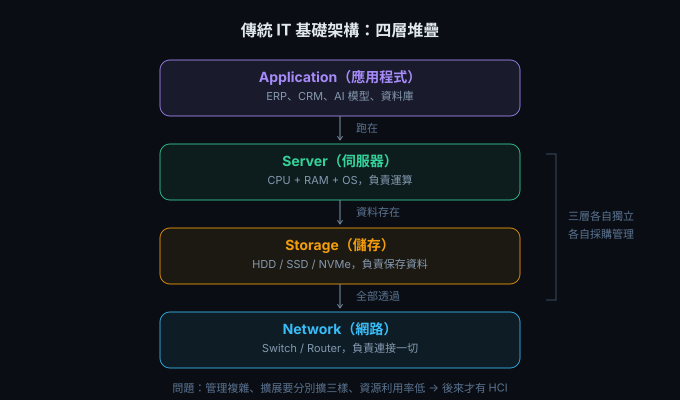
# 第一層：Server
Server 有三種物理形態，差別在密度和適用規模。
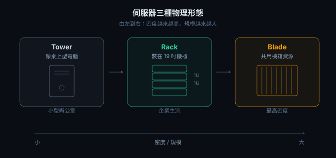
Tower 像桌上型電腦，適合小型辦公室。
Rack 裝在 19 吋標準機櫃裡，企業主流，每台佔 1U–4U 高度，一個機櫃塞滿一整排。
Blade 多台伺服器共用一個機箱的電源和散熱，密度最高。
# 第二層：Storage
Storage 有兩個維度要理解——「用什麼媒體存」和「怎麼接到伺服器」。
儲存媒體速度
速度差距就是這麼大——NVMe 比 HDD 快 17 到 35 倍。NVMe 透過 PCIe 直連 CPU，跳過 SATA 控制器瓶頸，所以快。
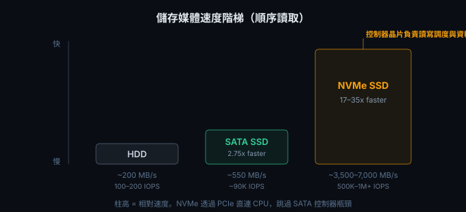
儲存怎麼接到伺服器
三種方式，從簡單到複雜。
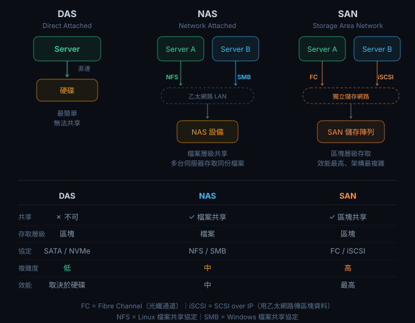
- DAS（Direct Attached） — 硬碟直接接在伺服器上。最簡單，無法共享。
- NAS（Network Attached） — 透過乙太網路用檔案協定（Linux 用 NFS，Windows 用 SMB）共享。多台伺服器存取同份檔案。
- SAN（Storage Area Network） — 用獨立儲存網路做區塊層級存取。協定是 FC（光纖通道）或 iSCSI（SCSI over IP）。效能最高、架構最複雜。
# 第三層：Network
Network 的核心只有兩種設備，做不同的事。
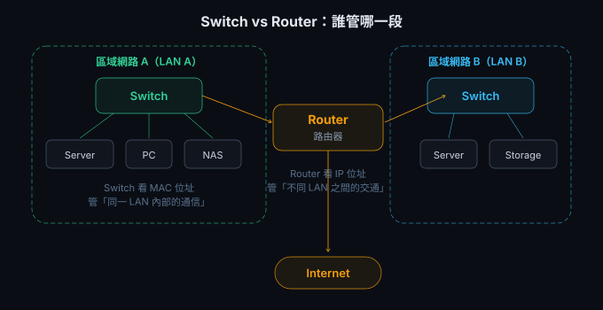
Switch 看 MAC 位址，管同一區域網路（LAN）內部的通信。同一間辦公室裡的電腦、伺服器、NAS 靠 Switch 互通。
Router 看 IP 位址，管不同 LAN 之間的交通。兩間辦公室互連、連上 Internet，都是 Router 的事。
# 傳統架構的問題 → HCI
把前面所有東西收在一起看——傳統架構的問題，就是 HCI（Hyper-Converged Infrastructure）要解決的事。
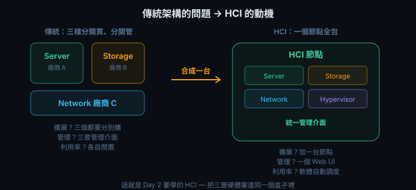
傳統 Server、Storage、Network 三樣分開買、分開管。擴展三個都要分別擴、管理三套介面、資源各自閒置。HCI 把三層合成一台節點——擴展加一台節點、管理一個 Web UI、利用率靠軟體自動調度。
# 補充：Cache Server
Cache Server 不在前面四層堆疊裡，它是加在 Application 和 Storage 之間的加速層。
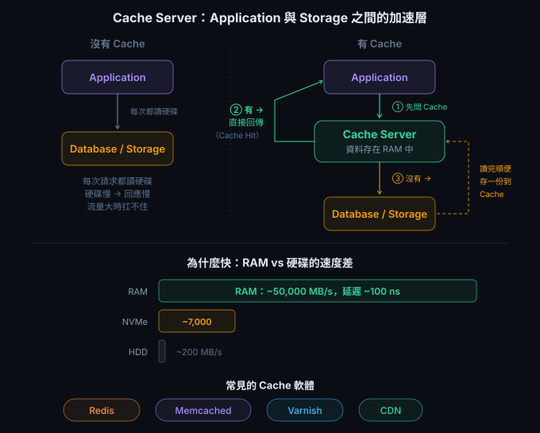
核心邏輯三步。
Application 要資料時，先問 Cache Server——RAM 裡有沒有。
有的話叫 Cache Hit，直接從 RAM 回傳，不碰硬碟。RAM 速度是 NVMe 的 7 倍、HDD 的 250 倍。
沒有的話叫 Cache Miss，去 Database / Storage 讀，讀完順便複製一份存到 Cache，下次就不用再讀硬碟。
為什麼不全部存在 RAM？RAM 貴、斷電就消失（volatile）。所以 Cache 只放最常被讀取的熱資料，冷資料還是存硬碟。
Cache Miss 時還是要讀硬碟。NVMe SSD 讓 Cache Miss 的代價變小——讀硬碟越快，沒快取到的懲罰就越輕。
# 虛擬機與 Hypervisor
虛擬機（VM）是在一台實體伺服器上，用軟體模擬出多台獨立的「虛擬電腦」。每台 VM 有自己的 OS、CPU、RAM、硬碟、網路——互不干擾。
讓 VM 跑起來的軟體叫 Hypervisor，分兩類，差別在裝的位置。
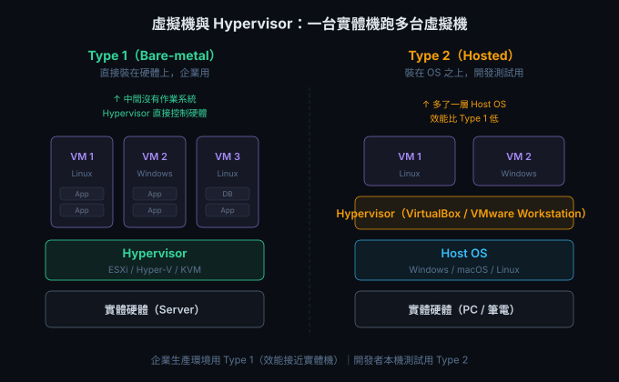
Type 1（Bare-metal） 直接裝在硬體上，中間沒有作業系統，效能接近實體機，企業生產環境用。代表：VMware ESXi、Hyper-V Server、KVM。
Type 2（Hosted） 裝在現有 OS（Windows / macOS / Linux）之上，多了一層 OS 所以效能較低，開發測試用。代表：VirtualBox、VMware Workstation。
三大虛擬化平台
# HCI 深入：定義、技術、廠商
前面看過傳統架構的問題——Server、Storage、Network 各買各管。HCI（Hyper-Converged Infrastructure）把 Server、Storage、Network、Hypervisor 整合在同一個硬體節點中，以軟體定義的方式統一管理。
| 傳統架構 | HCI | |
|---|---|---|
| 組成 | 獨立伺服器 + SAN/NAS + 網路 | 每個節點包含運算＋儲存＋網路 |
| 儲存 | 集中式（SAN/NAS） | 分散式 SDS，各節點硬碟組成叢集儲存池 |
| 擴展 | Scale-up（升級單一設備） | Scale-out（加節點） |
| 管理 | 多個管理介面 | 單一管理平面 |
| 最少節點 | 依設備而異 | 通常 3 個節點起跳 |
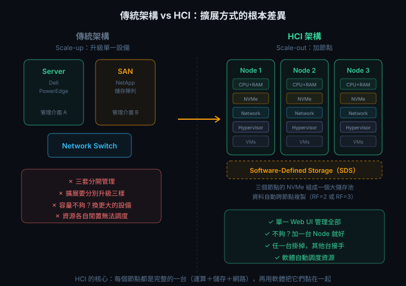
核心技術：Software-Defined Storage（SDS）
HCI 的關鍵是 SDS——所有節點的本地硬碟由軟體統一管理，對外呈現為一個大儲存池。資料自動跨節點複製（Replication Factor，通常 RF=2 或 RF=3），任一台掛掉其他台接手。
HCI 主要廠商
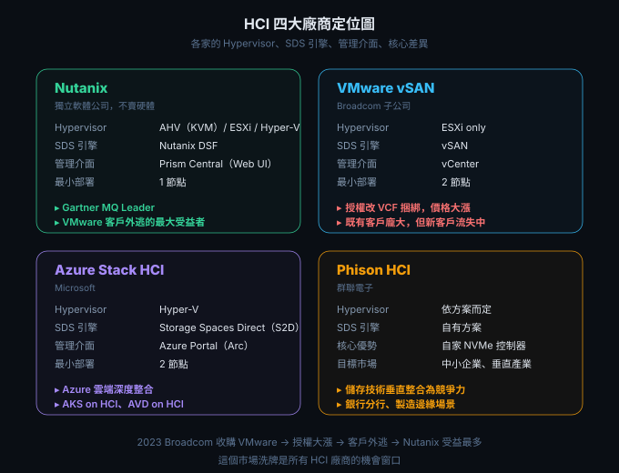
Nutanix 是獨立 HCI 軟體公司，不賣硬體，可跑在 Dell / Lenovo / HPE / 自有 NX 硬體上。自有 Hypervisor AHV（基於 KVM，免費內建），也支援 ESXi 和 Hyper-V。管理平面是 Prism Central（Web UI）。Gartner Magic Quadrant Leader，受益於 Broadcom 收購 VMware 後的客戶外逃潮。
VMware vSAN 是 Broadcom 旗下的 HCI 儲存方案，需搭配 vSphere（ESXi）和 vCenter。授權改為 VCF（VMware Cloud Foundation）捆綁銷售，既有客戶龐大但新客戶正在流失。
Azure Stack HCI 是 Microsoft 的方案，Hypervisor 用 Hyper-V，SDS 用 Storage Spaces Direct（S2D），管理走 Azure Arc（從 Azure Portal 管地端叢集）。特色是 Azure 雲端深度整合——AKS on HCI、AVD on HCI。
Phison HCI 以自家 NVMe SSD 控制器為核心差異化，儲存效能有成本優勢。目標市場是中小企業和特定垂直產業——銀行分行、製造邊緣。定位是儲存技術為核心競爭力的 HCI。
# AI 基礎架構
AI 的基礎架構跟傳統 IT 長得不一樣——多了 GPU 和 AI Framework 兩層，對 Storage 和 Network 的速度要求也高出一個量級。
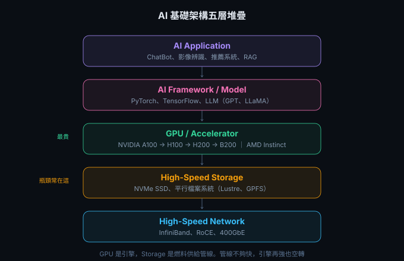
為什麼 AI 需要高速 Storage：I/O Bottleneck
GPU 是 AI 的運算引擎。儲存的讀寫速度跟不上 GPU 消化資料的速度，GPU 就會閒置等待——等於浪費昂貴的 GPU 時間。
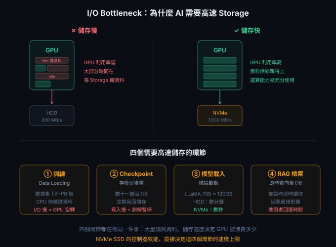
四個環節都卡在儲存速度。
訓練 Data Loading——數據集 TB 到 PB 級，GPU 持續從儲存讀資料，I/O 慢等於 GPU 空轉。
Checkpoint——訓練過程中定期存模型權重（數十到數百 GB），寫入慢等於訓練暫停。
模型載入——LLaMA 70B 以 FP16 格式約 130GB。HDD 讀取要幾分鐘，NVMe 數秒。
RAG 檢索——推論時即時從向量資料庫讀資料，儲存延遲直接影響回應時間。
主要 AI 基礎架構方案
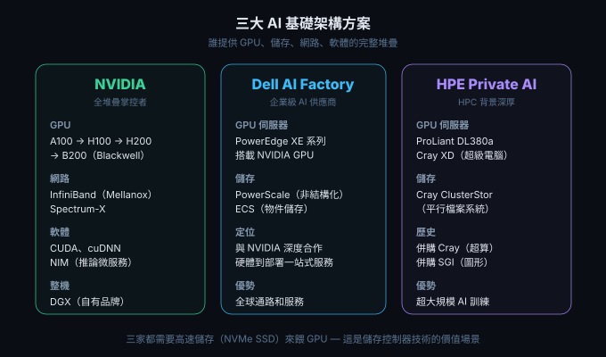
NVIDIA 掌控全堆疊。GPU 從 A100 → H100 → H200 → B200（Blackwell 架構）。網路是 InfiniBand（併購 Mellanox 取得）和 Spectrum-X。軟體有 CUDA、cuDNN、NIM（推論微服務）。整機有 DGX（自有品牌）和 HGX（OEM 參考設計）。這個從晶片到軟體到整機的垂直整合是護城河。
Dell AI Factory 走硬體到部署的一站式服務。GPU 伺服器是 PowerEdge XE 系列，儲存用 PowerScale（非結構化資料）和 ECS（物件儲存），與 NVIDIA 深度合作。
HPE Private AI 的 HPC 背景最深——併購 Cray（超算）和 SGI（圖形）。GPU 伺服器有 ProLiant DL380a 和 Cray XD（HPC/AI 超級電腦），儲存是 Cray ClusterStor（平行檔案系統）。